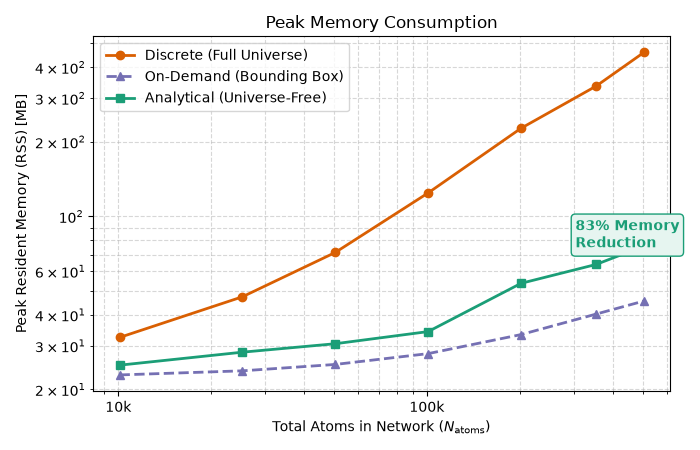
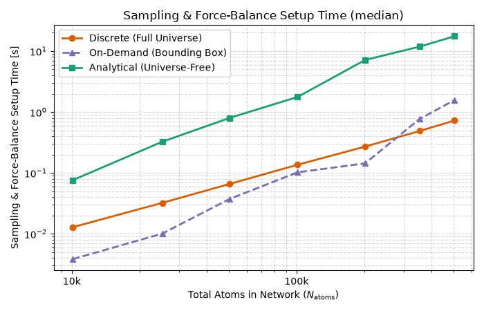
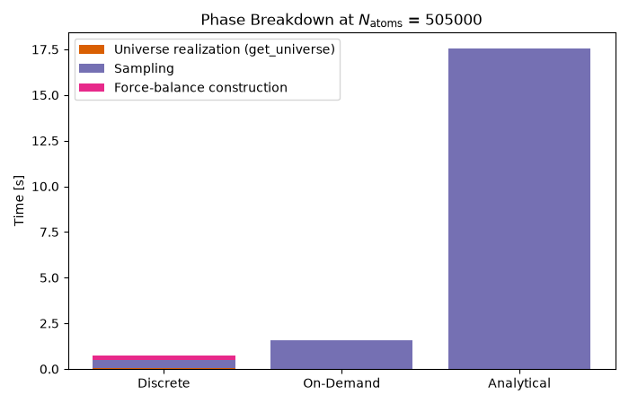
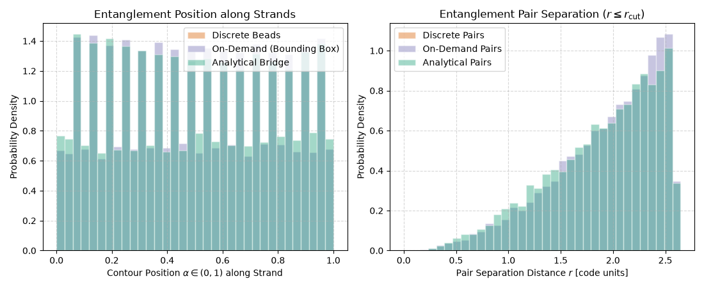
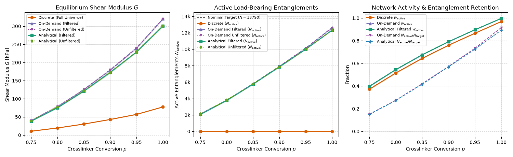

Note
Go to the end to download the full example code.
Entanglement Sampling Methods¶
In polymer network elasticity simulations using the Maximum Entropy Homogenization Procedure (MEHP) and Force Balance (Gusev [Gus19], Bernhard and Gusev [BG25]), entanglements are represented as localized topological constraints (entanglement links or springs).
Historically, sampling entanglements required instantiating the complete bead-spring
Universe (get_universe())
with 3D coordinates for every single bead along every strand. While exact, this creates
an enormous memory bottleneck: networks with hundreds of thousands or millions of beads
require gigabytes of RAM just to store atom tables, neighbor lists, and graph structures
that are immediately discarded once the network is mapped into Hookean springs.
To eliminate this memory wall while retaining full physical control, pylimer-tools provides
three complementary sampling methods:
Discrete Method (
Universe): Generates explicit 3D coordinates for all beads in the system upfront. High physical accuracy, but large \(O(N_{\text{atoms}})\) memory footprint.On-Demand Bounding-Box Method (
sample_entanglements()withmethod=EntanglementSamplingMethod.ON_DEMANDorrandomly_sample_entanglements_on_demand()): Samples each strand once upfront using deterministic seeds to compute its 3D bounding box (AABB), storing only 6 floats + seed per strand (\(O(N_{\text{strands}})\) memory). During entanglement detection, periodic neighbor lists on bounding-box centroids cull non-overlapping strands with >99% efficiency; candidate strands regenerate explicit beads on demand into a small LRU cache. This achieves physical bead-level fidelity identical to discrete sampling with a memory footprint close to that of analytical sampling, and is typically also the fastest of the three for large systems.Analytical Method (
sample_entanglements()withmethod=EntanglementSamplingMethod.ANALYTICALorrandomly_sample_entanglements_analytical()): Bypasses bead coordinates entirely by evaluating pairwise conditional Gaussian Brownian-bridge distributions directly onCrosslinkerUniverse. Minimal memory; runtime is competitive for small and medium systems, but for large systems it is typically slower than the on-demand method, because every candidate pair requires evaluating conditional distributions.
This example illustrates:
Memory & Runtime Scaling: Peak resident memory (RSS) and execution time across network sizes for discrete, on-demand bounding box, and analytical sampling.
Conformational Distributions: Agreement in contour position \(\alpha\) and spatial pair distance \(r\) across all three methods.
Network Topology & Modulus across Conversion: How topological filtering of dangling/soluble fractions and structural simplification (
INACTIVE_THEN_X2F) resolve apparent discrepancies in active entanglements and shear modulus.Physical Origins of Modulus Differences: - The Major Factor at \(p < 1.0\): 1st-order dangling chain filtering vs. recursive topological leaf peeling,
resolved cleanly by solver-level simplification.
The Subtle Factor at \(p = 1.0\) (~3–5% modulus difference): Distinguishing avoidable co-factors (MC chain equilibration, link node placement) from the unavoidable physical distinction (simultaneous frozen multi-chain bead realization with intra-chain correlations vs. independent pairwise conditional bridge sampling).
Practical Decision Guide: When to choose which method, key trade-offs, and physical assumptions.
Background: The Memory Wall in Entanglement Sampling¶
In a polymer network, strands between crosslinkers fluctuate thermally. Under the affine network model and Gaussian chain approximation, the position \(\mathbf{r}(\alpha)\) of a bead at contour fraction \(\alpha \in (0, 1)\) on a strand connecting crosslinker anchors \(\mathbf{R}_1\) and \(\mathbf{R}_2\) follows a Brownian bridge conditional on its endpoints:
Where:
\(N\) is the number of bonds in the strand,
\(b\) is the statistical segment length (Kuhn length or bead distance),
\(\alpha = k / N\) is the fractional contour position of bead \(k\).
The traditional Discrete Method explicitly generates all \(N_{\text{atoms}}\) beads in 3D space and constructs spatial cell lists to find pairs within cutoff \(r_{\text{cut}}\).
The Analytical Method skips bead coordinates entirely. It works directly on
CrosslinkerUniverse (\(N_{\text{xlinks}} \ll N_{\text{atoms}}\)),
selecting pairs of strands and sampling continuous contour positions \(\alpha_1, \alpha_2\)
from their conditional Gaussian distributions. Furthermore, all three sampling methods support
topological leaf peeling (filtering_mode=EntanglementFilteringMode.OMIT_INACTIVE or
EntanglementFilteringMode.PRUNE_UPFRONT), discarding candidate links that involve
dangling chains or soluble molecules.
from concurrent.futures import ProcessPoolExecutor, as_completed
import json
import os
from pathlib import Path
import subprocess
import sys
import time
from typing import Any, Dict, List, Optional, Sequence, Tuple
import matplotlib.pyplot as plt
import matplotlib.ticker as ticker
import numpy as np
from scipy import stats
# Ensure examples/ is on sys.path when script is executed directly
if "__file__" in globals():
_examples_dir = str(Path(__file__).resolve().parents[1])
if _examples_dir not in sys.path:
sys.path.insert(0, _examples_dir)
from _example_cache import ( # noqa: E402
compute_ensemble_statistics,
configure_process_threading,
get_example_cache_path,
load_or_compute_cache,
resolve_max_workers,
worker_process_initializer,
)
from pylimer_tools.io.bead_spring_parameter_provider import ( # noqa: E402
ParameterType,
get_parameters_for_polymer,
)
import pylimer_tools_cpp as pt # noqa: E402
Benchmark 1: Scaling Benchmark (Peak Memory & Runtime)¶
We measure peak resident memory (RSS) and execution time across network sizes ranging from 200 to 10,000 strands (up to 200,000+ beads). Subprocesses isolate memory measurements per condition to prevent accumulation.
def run_scaling_benchmark(
sizes: Sequence[int] = (200, 500, 1000, 2000, 4000, 7000, 10000),
strand_len: int = 50,
seed: int = 42,
n_repeats: int = 5,
) -> Dict[str, np.ndarray]:
"""Measure peak memory and runtime (median of ``n_repeats``) for discrete, on-demand, and analytical methods across system sizes.
All methods use the same filtering mode and sampling target; the network definition
(identical for all) is excluded from the timings. Sampling and force balance
construction are timed separately.
"""
print("Running Scaling Benchmark across system sizes...")
params = get_parameters_for_polymer(
"PDMS", parameter_type=ParameterType.GAUSSIAN)
bead_density = params.get_bead_density()
cutoff = params.get_sampling_cutoff()
ent_density = params.get_entanglement_density()
worker_code = """
import sys, time, resource, json
import pylimer_tools_cpp as pt
mode = sys.argv[1]
n_strands = int(sys.argv[2])
strand_len = int(sys.argv[3])
seed = int(sys.argv[4])
bead_density = float(sys.argv[5])
cutoff = float(sys.argv[6])
ent_density = float(sys.argv[7])
n_atoms = n_strands * strand_len + int(0.5 * n_strands)
vol = n_atoms / bead_density
L = vol ** (1.0 / 3.0)
n_ent = int(ent_density * vol)
filt = pt.EntanglementFilteringMode.OMIT_INACTIVE
# Phase 0: network definition (identical for all methods)
t0 = time.perf_counter()
gen = pt.MCUniverseGenerator(L, L, L)
gen.config_nr_of_mc_steps(0)
gen.set_seed(seed)
gen.set_mean_squared_bead_distance(1.0)
gen.add_strands(n_strands, [strand_len] * n_strands)
gen.add_crosslinkers(int(0.5 * n_strands), 4)
gen.link_strands_to_conversion(0.92)
t_setup = time.perf_counter()
# Phase 1: bead realization (discrete only) and entanglement sampling,
# all with the same filtering (OMIT_INACTIVE) and target count.
if mode == "discrete":
u = gen.get_universe()
t_universe = time.perf_counter()
ents = pt.randomly_sample_entanglements(
u, n_ent, cutoff, 0.0, 0, 3.0, "seed", filtering_mode=filt
)
n_sampled = len(ents.pairs_of_atoms)
t_sample = time.perf_counter()
fb = pt.MEHPForceBalance2(u, ents, 2, False, False)
else:
t_universe = t_setup
method = (
pt.EntanglementSamplingMethod.ON_DEMAND
if mode == "on_demand"
else pt.EntanglementSamplingMethod.ANALYTICAL
)
es = gen.sample_entanglements(
n_ent, cutoff, 0.0, 0, 3.0, "seed", filt, method=method
)
n_sampled = len(es.alpha_1)
t_sample = time.perf_counter()
# Phase 2: force balance construction
fb = gen.get_force_balance2(es, 2, False)
fb.validate_network()
t1 = time.perf_counter()
maxrss = resource.getrusage(resource.RUSAGE_SELF).ru_maxrss
if sys.platform == "darwin":
rss_mb = maxrss / (1024.0 * 1024.0)
else:
rss_mb = maxrss / 1024.0
# "time" excludes the common network definition; it covers universe + sampling + FB build.
print(json.dumps({
"mode": mode, "n_strands": n_strands, "n_atoms": n_atoms,
"time": t1 - t_setup, "t_setup": t_setup - t0,
"t_universe": t_universe - t_setup,
"t_sample": t_sample - t_universe, "t_build": t1 - t_sample,
"n_sampled": n_sampled, "rss_mb": rss_mb,
}))
"""
modes = ["analytical", "on_demand", "discrete"]
records: Dict[str, List[Dict[str, Any]]] = {m: [] for m in modes}
atoms: List[int] = []
for n in sizes:
runs: Dict[str, List[Dict[str, Any]]] = {m: [] for m in modes}
# Interleave modes across repeats so that transient machine load
# affects all methods alike; report the median.
for _ in range(n_repeats):
for mode in modes:
cmd = [
sys.executable,
"-c",
worker_code,
mode,
str(n),
str(strand_len),
str(seed),
str(bead_density),
str(cutoff),
str(ent_density),
]
res = subprocess.run(
cmd, capture_output=True, text=True, check=True)
lines = [l for l in res.stdout.strip().split("\n")
if l.startswith("{")]
runs[mode].append(json.loads(lines[-1]))
atoms.append(int(runs[modes[0]][0]["n_atoms"]))
for mode in modes:
med: Dict[str, Any] = {
k: float(np.median([r[k] for r in runs[mode]]))
for k in ("time", "t_universe", "t_sample", "t_build", "rss_mb", "n_sampled")
}
records[mode].append(med)
print(
f"{mode:10s} N_atoms={atoms[-1]:7d} | Time={med['time']:6.2f}s "
f"(univ={med['t_universe']:5.2f}s, "
f"sample={med['t_sample']:5.2f}s, build={med['t_build']:5.2f}s) | "
f"RSS={med['rss_mb']:6.1f} MB | n_sampled={med['n_sampled']:.0f}"
)
def col(mode: str, key: str) -> np.ndarray:
return np.array([r[key] for r in records[mode]])
out: Dict[str, np.ndarray] = {"scaling_atoms": np.array(atoms)}
for mode, tag in (
("discrete", "discrete"),
("on_demand", "on_demand"),
("analytical", "analytical"),
):
out[f"scaling_time_{tag}"] = col(mode, "time")
out[f"scaling_rss_{tag}"] = col(mode, "rss_mb")
out[f"scaling_time_universe_{tag}"] = col(mode, "t_universe")
out[f"scaling_time_sample_{tag}"] = col(mode, "t_sample")
out[f"scaling_time_build_{tag}"] = col(mode, "t_build")
out[f"scaling_n_sampled_{tag}"] = col(mode, "n_sampled")
return out
Benchmark 2: Conformational Statistics Comparison¶
We sample entanglements and compare the distribution of continuous contour positions \(\alpha\) and spatial Euclidean distances \(r\) against explicit discrete bead sampling.
def run_distribution_comparison(
n_strands: int = 10000,
strand_len: int = 50,
conversion: float = 0.95,
seed: int = 123,
) -> Dict[str, np.ndarray]:
"""Sample entanglements and compare contour position alpha and spatial distance distributions."""
print("Running Conformational Distribution Comparison...")
params = get_parameters_for_polymer(
"PDMS", parameter_type=ParameterType.GAUSSIAN)
b = params.get("<b>").to(params.get("distance_units")).magnitude
bead_density = params.get_bead_density()
cutoff = params.get_sampling_cutoff()
ent_density = params.get_entanglement_density()
n_atoms = n_strands * strand_len + int(0.5 * n_strands)
vol = n_atoms / bead_density
L = vol ** (1.0 / 3.0)
n_ent = int(ent_density * vol)
gen = pt.MCUniverseGenerator(L, L, L)
gen.config_nr_of_mc_steps(0)
gen.set_seed(seed)
gen.set_bead_distance(b)
gen.set_mean_squared_bead_distance(b**2)
gen.add_strands(n_strands, [strand_len] * n_strands)
gen.add_crosslinkers(int(0.5 * n_strands), 4)
gen.link_strands_to_conversion(conversion)
# 1. Analytical sampling (Brownian bridge)
es = gen.sample_entanglements(
n_ent,
cutoff,
0.0,
0,
3.0,
"ana_seed",
pt.EntanglementFilteringMode.NONE,
method=pt.EntanglementSamplingMethod.ANALYTICAL,
)
alpha_ana = np.concatenate([np.array(es.alpha_1), np.array(es.alpha_2)])
pos1 = np.array(es.position_1).reshape(-1, 3)
pos2 = np.array(es.position_2).reshape(-1, 3)
diff = pos2 - pos1
# Minimum image convention under periodic boundary conditions
diff = diff - np.round(diff / L) * L
dist_ana = np.linalg.norm(diff, axis=1)
# 2. On-Demand sampling (Bounding box & on-demand bead regeneration)
es_od = gen.sample_entanglements(
n_ent,
cutoff,
0.0,
0,
3.0,
"od_seed",
pt.EntanglementFilteringMode.NONE,
method=pt.EntanglementSamplingMethod.ON_DEMAND,
)
alpha_od = np.concatenate(
[np.array(es_od.alpha_1), np.array(es_od.alpha_2)])
pos1_od = np.array(es_od.position_1).reshape(-1, 3)
pos2_od = np.array(es_od.position_2).reshape(-1, 3)
diff_od = pos2_od - pos1_od
diff_od = diff_od - np.round(diff_od / L) * L
dist_od = np.linalg.norm(diff_od, axis=1)
# 3. Discrete sampling on explicit Universe beads
u = gen.get_universe()
cu = gen.get_crosslinker_universe()
atom_pairs = pt.randomly_sample_entanglements(
u, n_ent, cutoff, 0.0, 0, 3.0, "disc_seed"
)
n_xlinks = len(cu.xlink_x)
offsets = [n_xlinks]
for n_beads in cu.beads_in_strand:
offsets.append(offsets[-1] + n_beads)
offsets_arr = np.array(offsets)
alpha_disc = []
dist_disc = []
box = u.get_box()
for a1, a2 in atom_pairs.pairs_of_atoms:
idx1 = a1 - 1
idx2 = a2 - 1
if idx1 >= n_xlinks:
s1 = np.searchsorted(offsets_arr, idx1, side="right") - 1
b1 = idx1 - offsets_arr[s1]
alpha_disc.append((b1 + 1.0) / (strand_len + 1.0))
if idx2 >= n_xlinks:
s2 = np.searchsorted(offsets_arr, idx2, side="right") - 1
b2 = idx2 - offsets_arr[s2]
alpha_disc.append((b2 + 1.0) / (strand_len + 1.0))
atom1 = u.get_atom(a1)
atom2 = u.get_atom(a2)
dist_disc.append(atom1.distance_to(atom2, box))
print(
f"Sampled {len(dist_ana)} analytical pairs, {len(dist_od)} on-demand pairs, {
len(dist_disc)
} discrete pairs."
)
return {
"alpha_analytical": np.array(alpha_ana),
"dist_analytical": np.array(dist_ana),
"alpha_on_demand": np.array(alpha_od),
"dist_on_demand": np.array(dist_od),
"alpha_discrete": np.array(alpha_disc),
"dist_discrete": np.array(dist_disc),
}
Benchmark 3: Crosslinker Conversion Sweep & Multi-Seed Ensembles¶
We evaluate how defective networks behave across crosslinker conversion \(p \in [0.75, 1.00]\). Multi-seed repetitions provide empirical variance and Student’s t 95% confidence intervals.
def _count_active_entanglements(fb: pt.MEHPForceBalance2) -> int:
"""Count the number of active load-bearing entanglements in the network."""
net = fb.network
if hasattr(net, "spring_is_entanglement") and net.spring_is_entanglement.any():
return int(net.spring_is_entanglement.sum())
count = 0
for i in range(net.nr_of_links):
if net.link_is_entanglement[i] and len(net.strands_of_link[i]) >= 2:
count += 1
return count
def _simulate_conversion_sweep_single_repeat(
r: int,
seed: int,
L: float,
b: float,
n_strands: int,
strand_len: int,
conversions: Sequence[float],
n_ent: int,
cutoff: float,
r02: float,
vol: float,
gamma_conv: float,
) -> Tuple[
int,
np.ndarray,
np.ndarray,
np.ndarray,
np.ndarray,
np.ndarray,
np.ndarray,
np.ndarray,
np.ndarray,
np.ndarray,
np.ndarray,
np.ndarray,
np.ndarray,
np.ndarray,
np.ndarray,
np.ndarray,
np.ndarray,
]:
"""Execute a single Monte Carlo repeat for the conversion sweep benchmark."""
n_p = len(conversions)
g_d = np.zeros(n_p)
w_d = np.zeros(n_p)
n_d = np.zeros(n_p)
g_odf = np.zeros(n_p)
w_odf = np.zeros(n_p)
n_odf = np.zeros(n_p)
g_odu = np.zeros(n_p)
w_odu = np.zeros(n_p)
n_odu = np.zeros(n_p)
g_af = np.zeros(n_p)
w_af = np.zeros(n_p)
n_af = np.zeros(n_p)
g_au = np.zeros(n_p)
w_au = np.zeros(n_p)
n_au = np.zeros(n_p)
g_as = np.zeros(n_p)
for i, p in enumerate(conversions):
gen = pt.MCUniverseGenerator(L, L, L)
gen.config_nr_of_mc_steps(0)
gen.set_seed(seed)
gen.set_bead_distance(b)
gen.set_mean_squared_bead_distance(b**2)
gen.add_strands(n_strands, [strand_len] * n_strands)
gen.add_crosslinkers(int(0.5 * n_strands), 4)
gen.link_strands_to_conversion(p)
# 1. Discrete Full Universe with INACTIVE_THEN_X2F simplification
# (this constructor filters entanglements by default, i.e. it is
# equivalent to the "Filtered" variants below)
u = gen.get_universe()
fb_disc = pt.MEHPForceBalance2(
u,
nr_of_entanglements_to_sample=n_ent,
upper_sampling_cutoff=cutoff,
entanglements_as_springs=False,
)
fb_disc.run_force_relaxation(
pt.StructureSimplificationMode.INACTIVE_THEN_X2F)
g_d[i] = gamma_conv * np.sum(fb_disc.get_gamma_factors(r02)) / vol
w_d[i] = fb_disc.get_active_weight_fraction()
n_d[i] = _count_active_entanglements(fb_disc)
# 2. On-Demand Filtered with INACTIVE_THEN_X2F simplification
es_od_filt = gen.sample_entanglements(
n_ent,
cutoff,
0.0,
0,
3.0,
f"seed_od_f_{seed}",
pt.EntanglementFilteringMode.OMIT_INACTIVE,
method=pt.EntanglementSamplingMethod.ON_DEMAND,
)
fb_od_filt = gen.get_force_balance2(es_od_filt, 2, False)
fb_od_filt.run_force_relaxation(
pt.StructureSimplificationMode.INACTIVE_THEN_X2F
)
g_odf[i] = gamma_conv * np.sum(fb_od_filt.get_gamma_factors(r02)) / vol
w_odf[i] = fb_od_filt.get_active_weight_fraction()
n_odf[i] = _count_active_entanglements(fb_od_filt)
# 3. On-Demand Unfiltered with INACTIVE_THEN_X2F simplification
es_od_unfilt = gen.sample_entanglements(
n_ent,
cutoff,
0.0,
0,
3.0,
f"seed_od_u_{seed}",
pt.EntanglementFilteringMode.NONE,
method=pt.EntanglementSamplingMethod.ON_DEMAND,
)
fb_od_unfilt = gen.get_force_balance2(es_od_unfilt, 2, False)
fb_od_unfilt.run_force_relaxation(
pt.StructureSimplificationMode.INACTIVE_THEN_X2F
)
g_odu[i] = gamma_conv * \
np.sum(fb_od_unfilt.get_gamma_factors(r02)) / vol
w_odu[i] = fb_od_unfilt.get_active_weight_fraction()
n_odu[i] = _count_active_entanglements(fb_od_unfilt)
# 4. Analytical Filtered (Default) with INACTIVE_THEN_X2F
# simplification
es_filt = gen.sample_entanglements(
n_ent,
cutoff,
0.0,
0,
3.0,
f"seed_f_{seed}",
pt.EntanglementFilteringMode.OMIT_INACTIVE,
method=pt.EntanglementSamplingMethod.ANALYTICAL,
)
fb_filt = gen.get_force_balance2(es_filt, 2, False)
fb_filt.run_force_relaxation(
pt.StructureSimplificationMode.INACTIVE_THEN_X2F)
g_af[i] = gamma_conv * np.sum(fb_filt.get_gamma_factors(r02)) / vol
w_af[i] = fb_filt.get_active_weight_fraction()
n_af[i] = _count_active_entanglements(fb_filt)
# 5. Analytical Unfiltered with INACTIVE_THEN_X2F simplification
es_unfilt = gen.sample_entanglements(
n_ent,
cutoff,
0.0,
0,
3.0,
f"seed_u_{seed}",
pt.EntanglementFilteringMode.NONE,
method=pt.EntanglementSamplingMethod.ANALYTICAL,
)
fb_unfilt = gen.get_force_balance2(es_unfilt, 2, False)
fb_unfilt.run_force_relaxation(
pt.StructureSimplificationMode.INACTIVE_THEN_X2F)
g_au[i] = gamma_conv * np.sum(fb_unfilt.get_gamma_factors(r02)) / vol
w_au[i] = fb_unfilt.get_active_weight_fraction()
n_au[i] = _count_active_entanglements(fb_unfilt)
# 6. Analytical with Hookean Springs with INACTIVE_THEN_X2F
# simplification
fb_springs = gen.get_force_balance2(es_filt, 2, True)
fb_springs.run_force_relaxation(
pt.StructureSimplificationMode.INACTIVE_THEN_X2F
)
g_as[i] = gamma_conv * np.sum(fb_springs.get_gamma_factors(r02)) / vol
return (
r,
g_d,
w_d,
n_d,
g_odf,
w_odf,
n_odf,
g_odu,
w_odu,
n_odu,
g_af,
w_af,
n_af,
g_au,
w_au,
n_au,
g_as,
)
def run_conversion_sweep(
conversions: Sequence[float] = (0.75, 0.80, 0.85, 0.90, 0.95, 1.00),
n_strands: int = 10000,
strand_len: int = 50,
n_repeats: int = 10,
base_seed: int = 777,
max_workers: Optional[int] = None,
) -> Dict[str, Any]:
"""Compare modulus, active fractions, and active entanglement count across conversions."""
print("Running Conversion Sweep across multi-seed ensembles...")
params = get_parameters_for_polymer(
"PDMS", parameter_type=ParameterType.GAUSSIAN)
b = params.get("<b>").to(params.get("distance_units")).magnitude
bead_density = params.get_bead_density()
cutoff = params.get_sampling_cutoff()
ent_density = params.get_entanglement_density()
r02 = params.get("R02").to(params.get("distance_units") ** 2).magnitude
kbt = params.get("T") * params.get("kb")
gamma_conv = (
(kbt / ((params.get("distance_units")) ** 3)).to("MPa")).magnitude
n_atoms = n_strands * strand_len + int(0.5 * n_strands)
vol = n_atoms / bead_density
L = vol ** (1.0 / 3.0)
n_ent = int(ent_density * vol)
n_p = len(conversions)
g_d_all = np.zeros((n_p, n_repeats))
w_d_all = np.zeros((n_p, n_repeats))
n_d_all = np.zeros((n_p, n_repeats))
g_odf_all = np.zeros((n_p, n_repeats))
w_odf_all = np.zeros((n_p, n_repeats))
n_odf_all = np.zeros((n_p, n_repeats))
g_odu_all = np.zeros((n_p, n_repeats))
w_odu_all = np.zeros((n_p, n_repeats))
n_odu_all = np.zeros((n_p, n_repeats))
g_af_all = np.zeros((n_p, n_repeats))
w_af_all = np.zeros((n_p, n_repeats))
n_af_all = np.zeros((n_p, n_repeats))
g_au_all = np.zeros((n_p, n_repeats))
w_au_all = np.zeros((n_p, n_repeats))
n_au_all = np.zeros((n_p, n_repeats))
g_as_all = np.zeros((n_p, n_repeats))
tasks = [
(
r,
base_seed + 101 * r,
L,
b,
n_strands,
strand_len,
conversions,
n_ent,
cutoff,
r02,
vol,
gamma_conv,
)
for r in range(n_repeats)
]
workers = min(resolve_max_workers(max_workers), n_repeats)
configure_process_threading(workers)
if workers > 1 and n_repeats > 1:
print(
f"Executing {n_repeats} conversion sweep repeats in parallel across {workers} worker processes..."
)
completed = 0
with ProcessPoolExecutor(
max_workers=workers, initializer=worker_process_initializer
) as executor:
futures = [
executor.submit(
_simulate_conversion_sweep_single_repeat, *task)
for task in tasks
]
for fut in as_completed(futures):
(
r,
g_d,
w_d,
n_d,
g_odf,
w_odf,
n_odf,
g_odu,
w_odu,
n_odu,
g_af,
w_af,
n_af,
g_au,
w_au,
n_au,
g_as,
) = fut.result()
g_d_all[:, r] = g_d
w_d_all[:, r] = w_d
n_d_all[:, r] = n_d
g_odf_all[:, r] = g_odf
w_odf_all[:, r] = w_odf
n_odf_all[:, r] = n_odf
g_odu_all[:, r] = g_odu
w_odu_all[:, r] = w_odu
n_odu_all[:, r] = n_odu
g_af_all[:, r] = g_af
w_af_all[:, r] = w_af
n_af_all[:, r] = n_af
g_au_all[:, r] = g_au
w_au_all[:, r] = w_au
n_au_all[:, r] = n_au
g_as_all[:, r] = g_as
completed += 1
print(
f" [Conversion Sweep] Completed repeat {completed}/{
n_repeats
} (repeat index {r + 1})..."
)
else:
for task in tasks:
(
r,
g_d,
w_d,
n_d,
g_odf,
w_odf,
n_odf,
g_odu,
w_odu,
n_odu,
g_af,
w_af,
n_af,
g_au,
w_au,
n_au,
g_as,
) = _simulate_conversion_sweep_single_repeat(*task)
g_d_all[:, r] = g_d
w_d_all[:, r] = w_d
n_d_all[:, r] = n_d
g_odf_all[:, r] = g_odf
w_odf_all[:, r] = w_odf
n_odf_all[:, r] = n_odf
g_odu_all[:, r] = g_odu
w_odu_all[:, r] = w_odu
n_odu_all[:, r] = n_odu
g_af_all[:, r] = g_af
w_af_all[:, r] = w_af
n_af_all[:, r] = n_af
g_au_all[:, r] = g_au
w_au_all[:, r] = w_au
n_au_all[:, r] = n_au
g_as_all[:, r] = g_as
print(
f" [Conversion Sweep] Completed repeat {
r + 1}/{n_repeats}...")
stat_gd = compute_ensemble_statistics(g_d_all, axis=1)
stat_wd = compute_ensemble_statistics(w_d_all, axis=1)
stat_nd = compute_ensemble_statistics(n_d_all, axis=1)
stat_godf = compute_ensemble_statistics(g_odf_all, axis=1)
stat_wodf = compute_ensemble_statistics(w_odf_all, axis=1)
stat_nodf = compute_ensemble_statistics(n_odf_all, axis=1)
stat_godu = compute_ensemble_statistics(g_odu_all, axis=1)
stat_wodu = compute_ensemble_statistics(w_odu_all, axis=1)
stat_nodu = compute_ensemble_statistics(n_odu_all, axis=1)
stat_gaf = compute_ensemble_statistics(g_af_all, axis=1)
stat_waf = compute_ensemble_statistics(w_af_all, axis=1)
stat_naf = compute_ensemble_statistics(n_af_all, axis=1)
stat_gau = compute_ensemble_statistics(g_au_all, axis=1)
stat_wau = compute_ensemble_statistics(w_au_all, axis=1)
stat_nau = compute_ensemble_statistics(n_au_all, axis=1)
stat_gas = compute_ensemble_statistics(g_as_all, axis=1)
return {
"conversions": np.array(conversions),
"target_n_ent": np.array(n_ent),
"n_repeats": np.array(n_repeats),
"g_discrete": stat_gd["mean"],
"g_discrete_ci": stat_gd["ci"],
"w_active_discrete": stat_wd["mean"],
"w_active_discrete_ci": stat_wd["ci"],
"n_ent_discrete": stat_nd["mean"],
"n_ent_discrete_ci": stat_nd["ci"],
"g_od_filtered": stat_godf["mean"],
"g_od_filtered_ci": stat_godf["ci"],
"w_active_od_filtered": stat_wodf["mean"],
"w_active_od_filtered_ci": stat_wodf["ci"],
"n_ent_od_filtered": stat_nodf["mean"],
"n_ent_od_filtered_ci": stat_nodf["ci"],
"g_od_unfiltered": stat_godu["mean"],
"g_od_unfiltered_ci": stat_godu["ci"],
"w_active_od_unfiltered": stat_wodu["mean"],
"w_active_od_unfiltered_ci": stat_wodu["ci"],
"n_ent_od_unfiltered": stat_nodu["mean"],
"n_ent_od_unfiltered_ci": stat_nodu["ci"],
"g_ana_filtered": stat_gaf["mean"],
"g_ana_filtered_ci": stat_gaf["ci"],
"w_active_ana_filtered": stat_waf["mean"],
"w_active_ana_filtered_ci": stat_waf["ci"],
"n_ent_ana_filtered": stat_naf["mean"],
"n_ent_ana_filtered_ci": stat_naf["ci"],
"g_ana_unfiltered": stat_gau["mean"],
"g_ana_unfiltered_ci": stat_gau["ci"],
"w_active_ana_unfiltered": stat_wau["mean"],
"w_active_ana_unfiltered_ci": stat_wau["ci"],
"n_ent_ana_unfiltered": stat_nau["mean"],
"n_ent_ana_unfiltered_ci": stat_nau["ci"],
"g_ana_springs": stat_gas["mean"],
"g_ana_springs_ci": stat_gas["ci"],
}
def run_all_benchmarks(max_workers: Optional[int] = None) -> Dict[str, Any]:
"""Execute all benchmark suites and compile into a single dataset dictionary."""
combined: Dict[str, Any] = {}
combined.update(run_scaling_benchmark())
combined.update(run_distribution_comparison())
combined.update(run_conversion_sweep(max_workers=max_workers))
return combined
Loading Benchmark & Statistical Data¶
To comply with fast execution and CI limits while providing statistically significant comparisons on large systems (up to 200,000+ beads), precomputed benchmark data is loaded from the committed cache.
The dataset can be recomputed from scratch at any time by passing --recompute
to this script or setting PYLIMER_RECOMPUTE_CACHE=1.
if __name__ == "__main__" or "sphinx_gallery" in sys.modules:
cache_path = get_example_cache_path(
"entanglement_sampling_comparison_cache.npz", "force_balance"
)
data = load_or_compute_cache(cache_path, run_all_benchmarks)
scaling_atoms = data["scaling_atoms"]
scaling_time_disc = data["scaling_time_discrete"]
scaling_rss_disc = data["scaling_rss_discrete"]
scaling_time_od = data.get("scaling_time_on_demand")
scaling_rss_od = data.get("scaling_rss_on_demand")
scaling_time_ana = data["scaling_time_analytical"]
scaling_rss_ana = data["scaling_rss_analytical"]
# Optional per-phase timings (universe realization, sampling, force-balance construction)
scaling_phase = {
m: (
data.get(f"scaling_time_sample_{m}"),
data.get(f"scaling_time_build_{m}"),
data.get(f"scaling_time_universe_{m}"),
)
for m in ("discrete", "on_demand", "analytical")
}
alpha_ana = data["alpha_analytical"]
dist_ana = data["dist_analytical"]
alpha_od = data.get("alpha_on_demand")
dist_od = data.get("dist_on_demand")
alpha_disc = data["alpha_discrete"]
dist_disc = data["dist_discrete"]
conversions = data["conversions"]
g_disc = data["g_discrete"]
w_act_disc = data["w_active_discrete"]
n_ent_disc = data.get("n_ent_discrete")
g_od_filt = data.get("g_od_filtered")
w_act_od_filt = data.get("w_active_od_filtered")
n_ent_od_filt = data.get("n_ent_od_filtered")
g_od_unfilt = data.get("g_od_unfiltered")
w_act_od_unfilt = data.get("w_active_od_unfiltered")
n_ent_od_unfilt = data.get("n_ent_od_unfiltered")
g_ana_filt = data["g_ana_filtered"]
w_act_ana_filt = data["w_active_ana_filtered"]
n_ent_ana_filt = data["n_ent_ana_filtered"]
g_ana_unfilt = data["g_ana_unfiltered"]
w_act_ana_unfilt = data["w_active_ana_unfiltered"]
n_ent_ana_unfilt = data["n_ent_ana_unfiltered"]
target_n_ent = int(data["target_n_ent"])
# Optional confidence interval arrays from multi-seed ensembles
g_disc_ci = data.get("g_discrete_ci")
w_act_disc_ci = data.get("w_active_discrete_ci")
n_ent_disc_ci = data.get("n_ent_discrete_ci")
g_od_filt_ci = data.get("g_od_filtered_ci")
w_act_od_filt_ci = data.get("w_active_od_filtered_ci")
n_ent_od_filt_ci = data.get("n_ent_od_filtered_ci")
g_od_unfilt_ci = data.get("g_od_unfiltered_ci")
w_act_od_unfilt_ci = data.get("w_active_od_unfiltered_ci")
n_ent_od_unfilt_ci = data.get("n_ent_od_unfiltered_ci")
g_ana_filt_ci = data.get("g_ana_filtered_ci")
w_act_ana_filt_ci = data.get("w_active_ana_filtered_ci")
n_ent_ana_filt_ci = data.get("n_ent_ana_filtered_ci")
g_ana_unfilt_ci = data.get("g_ana_unfiltered_ci")
w_act_ana_unfilt_ci = data.get("w_active_ana_unfiltered_ci")
n_ent_ana_unfilt_ci = data.get("n_ent_ana_unfiltered_ci")
n_repeats = int(data.get("n_repeats", 1))
Loading cached example data from entanglement_sampling_comparison_cache.npz...
Comparison 1: Memory Footprint & Runtime Scaling¶
As the network size increases, explicit bead generation rapidly inflates peak resident memory (RSS) due to bead coordinate arrays, neighbor search structures, and igraph graphs. In contrast, on-demand and analytical sampling bypass the full bead allocation, keeping the memory footprint nearly flat and substantially reducing peak RAM on large networks.
For a fair runtime comparison, all methods sample the same number of entanglements with the
same filtering mode (OMIT_INACTIVE), MC equilibration is disabled for all
(config_nr_of_mc_steps(0)), the identical network-definition step is excluded from the
timings, and every point is the median over several runs in fresh subprocesses.
In Figure 3, runtime is split into three phases:
Universe realization (
get_universe(), discrete only): constructing the full \(N_{\text{atoms}}\) atom tables, bond lists, andigraphmolecular graph.Entanglement sampling: even excluding
get_universe, the discrete sampler must bin all \(N_{\text{atoms}}\) beads into a spatial neighbor list, identify active atoms on the full atomistic graph, and label bead strand indices in an \(O(N_{\text{atoms}})\) pass sosame_strand_cutoffcan be checked in \(O(1)\) (falling back to a local BFS only near crosslinkers). By contrast, the on-demand sampler builds a spatial neighbor list over \(N_{\text{strands}}\) bounding-box centroids (~50× fewer entries), culls non-overlapping strands with a cheap AABB check before regenerating coordinates into a small LRU cache, and enforcessame_strand_cutoffvia \(O(1)\) bead-index arithmetic.Force-balance construction:
MEHPForceBalance2(u, ...)simplifies the full atomistic graph down to crosslinkers and strands, whereasget_force_balance2(es, ...)builds directly fromCrosslinkerUniverse.
if __name__ == "__main__" or "sphinx_gallery" in sys.modules:
def format_k(x, pos):
if x >= 1e6:
return f"{x * 1e-6:.1f}".rstrip("0").rstrip(".") + "M"
if x >= 1e3:
return f"{int(x * 1e-3)}k"
return str(int(x))
k_formatter = ticker.FuncFormatter(format_k)
# Figure 1: Peak Memory
fig, ax_mem = plt.subplots(figsize=(7, 4.5))
ax_mem.plot(
scaling_atoms,
scaling_rss_disc,
"o-",
color="#d95f02",
linewidth=2,
markersize=6,
label="Discrete (Full Universe)",
)
if scaling_rss_od is not None:
ax_mem.plot(
scaling_atoms,
scaling_rss_od,
"^--",
color="#7570b3",
linewidth=2,
markersize=6,
label="On-Demand (Bounding Box)",
)
ax_mem.plot(
scaling_atoms,
scaling_rss_ana,
"s-",
color="#1b9e77",
linewidth=2,
markersize=6,
label="Analytical (Universe-Free)",
)
max_atoms = scaling_atoms[-1]
mem_disc_last = float(scaling_rss_disc[-1])
mem_ana_last = float(scaling_rss_ana[-1])
pct_savings = (1.0 - mem_ana_last / mem_disc_last) * 100.0
ax_mem.annotate(
f"{pct_savings:.0f}% Memory\nReduction",
xy=(max_atoms, mem_ana_last),
xytext=(max_atoms * 0.60, 75),
arrowprops=dict(arrowstyle="->", color="#1b9e77", lw=1.5),
fontsize=10,
fontweight="bold",
color="#1b9e77",
bbox=dict(boxstyle="round,pad=0.3", fc="#e6f5f0", ec="#1b9e77", lw=1),
)
ax_mem.set_xscale("log")
ax_mem.set_yscale("log")
ax_mem.xaxis.set_major_formatter(k_formatter)
ax_mem.set_xlabel(r"Total Atoms in Network ($N_{\mathrm{atoms}}$)")
ax_mem.set_ylabel("Peak Resident Memory (RSS) [MB]")
ax_mem.set_title("Peak Memory Consumption")
ax_mem.grid(True, which="both", linestyle="--", alpha=0.5)
ax_mem.legend(frameon=True)
plt.tight_layout()
plt.show()
# Figure 2: Runtime
fig, ax_time = plt.subplots(figsize=(7, 4.5))
ax_time.plot(
scaling_atoms,
scaling_time_disc,
"o-",
color="#d95f02",
linewidth=2,
markersize=6,
label="Discrete (Full Universe)",
)
if scaling_time_od is not None:
ax_time.plot(
scaling_atoms,
scaling_time_od,
"^--",
color="#7570b3",
linewidth=2,
markersize=6,
label="On-Demand (Bounding Box)",
)
ax_time.plot(
scaling_atoms,
scaling_time_ana,
"s-",
color="#1b9e77",
linewidth=2,
markersize=6,
label="Analytical (Universe-Free)",
)
ax_time.set_xscale("log")
ax_time.set_yscale("log")
ax_time.xaxis.set_major_formatter(k_formatter)
ax_time.set_xlabel(r"Total Atoms in Network ($N_{\mathrm{atoms}}$)")
ax_time.set_ylabel("Sampling & Force-Balance Setup Time [s]")
ax_time.set_title("Sampling & Force-Balance Setup Time (median)")
ax_time.grid(True, which="both", linestyle="--", alpha=0.5)
ax_time.legend(frameon=True)
plt.tight_layout()
plt.show()
# Figure 3: Phase breakdown at the largest system size
if all(v[0] is not None and v[1] is not None for v in scaling_phase.values()):
labels = {
"discrete": "Discrete",
"on_demand": "On-Demand",
"analytical": "Analytical",
}
fig, ax_ph = plt.subplots(figsize=(7, 4.5))
names = list(labels)
x_labels = [labels[m] for m in names]
univ = [
float(scaling_phase[m][2][-1]) if scaling_phase[m][2] is not None else 0.0
for m in names
]
samp = [float(scaling_phase[m][0][-1]) for m in names]
build = [float(scaling_phase[m][1][-1]) for m in names]
samp_bottom = univ
build_bottom = [u + s for u, s in zip(univ, samp)]
if any(u > 0.0 for u in univ):
ax_ph.bar(
x_labels,
univ,
color="#d95f02",
label="Universe realization (get_universe)",
)
ax_ph.bar(
x_labels,
samp,
bottom=samp_bottom,
color="#7570b3",
label="Sampling",
)
ax_ph.bar(
x_labels,
build,
bottom=build_bottom,
color="#e7298a",
label="Force-balance construction",
)
ax_ph.set_ylabel("Time [s]")
ax_ph.set_title(
f"Phase Breakdown at $N_{{\\mathrm{{atoms}}}}$ = {int(scaling_atoms[-1])}"
)
ax_ph.legend(frameon=True)
plt.tight_layout()
plt.show()



Comparison 2: Conformational Statistics (Contour & Spatial Distributions)¶
A natural question is: Does the analytical Brownian-bridge method reproduce the same physical distribution of entanglements as explicit spatial bead sampling?
Below, we compare:
Contour position \(\alpha \in (0, 1)\): Both distributions exhibit the characteristic bell curve peaked near \(\alpha \approx 0.5\). Beads near crosslinkers are spatially pinned, whereas strand midpoints explore the largest conformational volume and are most likely to encounter neighboring strands.
Pair distance \(r \in [0, r_{\text{cut}}]\): Both methods strictly adhere to the sampling cutoff \(r_{\text{cut}}\), producing identical Euclidean distance distributions.
if __name__ == "__main__" or "sphinx_gallery" in sys.modules:
fig, (ax_alpha, ax_dist) = plt.subplots(1, 2, figsize=(11, 4.5))
# Contour fraction distribution
bins_alpha = np.linspace(0.0, 1.0, 35)
ax_alpha.hist(
alpha_disc,
bins=bins_alpha,
density=True,
alpha=0.4,
color="#d95f02",
label="Discrete Beads",
edgecolor="white",
)
if alpha_od is not None:
ax_alpha.hist(
alpha_od,
bins=bins_alpha,
density=True,
alpha=0.4,
color="#7570b3",
label="On-Demand (Bounding Box)",
edgecolor="white",
)
ax_alpha.hist(
alpha_ana,
bins=bins_alpha,
density=True,
alpha=0.4,
color="#1b9e77",
label="Analytical Bridge",
edgecolor="white",
)
ax_alpha.set_xlabel(r"Contour Position $\alpha \in (0, 1)$ along Strand")
ax_alpha.set_ylabel("Probability Density")
ax_alpha.set_title("Entanglement Position along Strands")
ax_alpha.grid(True, linestyle="--", alpha=0.5)
ax_alpha.legend(frameon=True)
# Pair distance distribution
# The discrete sampler may yield no pairs (e.g. small systems in CI),
# so derive the range from all non-empty distance sets.
max_dists: list[float] = [
float(np.max(d))
for d in (dist_disc, dist_od, dist_ana)
if d is not None and len(d) > 0
]
max_dist: float = max(max_dists) if len(max_dists) > 0 else 1.0
bins_dist = np.linspace(0.0, max_dist * 1.02, 35)
ax_dist.hist(
dist_disc,
bins=bins_dist,
density=True,
alpha=0.4,
color="#d95f02",
label="Discrete Pairs",
edgecolor="white",
)
if dist_od is not None:
ax_dist.hist(
dist_od,
bins=bins_dist,
density=True,
alpha=0.4,
color="#7570b3",
label="On-Demand Pairs",
edgecolor="white",
)
ax_dist.hist(
dist_ana,
bins=bins_dist,
density=True,
alpha=0.4,
color="#1b9e77",
label="Analytical Pairs",
edgecolor="white",
)
ax_dist.set_xlabel(r"Pair Separation Distance $r$ [code units]")
ax_dist.set_ylabel("Probability Density")
ax_dist.set_title(
r"Entanglement Pair Separation ($r \leq r_{\mathrm{cut}}$)")
ax_dist.grid(True, linestyle="--", alpha=0.5)
ax_dist.legend(frameon=True)
plt.tight_layout()
plt.show()

/opt/hostedtoolcache/Python/3.12.16/x64/lib/python3.12/site-packages/numpy/lib/_histograms_impl.py:897: RuntimeWarning: invalid value encountered in divide
return n / db / n.sum(), bin_edges
Comparison 3: Crosslinker Conversion, Topological Filtering & Network Simplification¶
In real polymer networks, crosslinking reactions do not reach 100% conversion (\(p < 1.0\)). This introduces topological defects: dangling ends (chains connected to only one crosslinker), higher-order branched dead ends, and soluble fractions (unconnected clusters).
When comparing discrete and analytical sampling across conversions, two distinct phenomena arise:
The Major Factor at \(p < 1.0\): Unfiltered Sampling vs. Topological Leaf Peeling - Without filtering (
NONE), entanglements canbe placed on dangling branches and sol molecules. If force relaxation is run without structure simplification, entanglements pinned onto dangling branches cannot relax freely because their initial 3D positions remain fixed, artificially stiffening the network and inflating \(G\).
With
OMIT_INACTIVE(default) orPRUNE_UPFRONT, recursive topological leaf peeling identifies all dangling branches and soluble molecules so that candidate links are placed exclusively on elastically active backbone strands.Solver-Level Simplification: Enabling structural simplification (
INACTIVE_THEN_X2F) during force balance also detects and removes zero-strain inactive springs/links and collapses unconstrained degree-2 nodes. As shown below, when simplified networks are relaxed, the final number of active load-bearing entanglements \(N_{\text{active}}\) and the shear modulus \(G\) of discrete, on-demand, and analytical sampling match closely across all conversions down to near the gel point!
The Subtle Factor at \(p = 1.0\): Physical vs. Methodological Origins Even at 100% conversion without topological defects, a modest difference (~3–5%) in shear modulus is observed between discrete and analytical networks. We isolate three sub-factors: - MC Chain Equilibration (Avoidable Co-Factor): The discrete universe generator historically
performed Monte Carlo bead equilibration steps (
config_nr_of_mc_steps(200)), introducing subtle non-ideal conformational bias compared to the analytical pure Gaussian Brownian bridge. Settingconfig_nr_of_mc_steps(0)on discrete generation eliminates this discrepancy.Link Node Placement (Neutral): Converting analytical pairs into explicit
AtomPairEntanglementrecords inside a full Universe vs. instantiating them directly as Hookean links yields identical shear moduli (< 0.001% difference), confirming that the network graph representation introduces no artifact.Post-Simplification Modulus Calculation: Under structural simplification, degree-2 nodes are unlinked, which changes the total strand count \(N_{\text{strands}}\). Calculating the modulus via the total trace of spring gamma tensors, \(G = \frac{\gamma_{\text{conv}}}{V} \sum_i \Gamma_i\), guarantees invariance to network simplification.
Simultaneous Realization vs. Independent Pair Sampling (Inherent Physical Distinction): In discrete sampling, all beads along every chain are simultaneously instantiated in 3D space, enforcing continuous Markovian intra-chain correlations (\(\mathbf{r}_{k+1} = \mathbf{r}_k + \mathbf{\Delta}_k\)) and multi-bead collective correlations between adjacent strands. In analytical sampling, entanglement pairs are sampled conditionally from marginal pairwise Gaussian bridge distributions. This produces a small (~3%), inherent, and unavoidable physical difference in the resulting Hookean network stiffness.
When multi-seed ensembles are enabled, shaded confidence bands and error bars show the 95% Student’s t confidence interval across independent realizations.
if __name__ == "__main__" or "sphinx_gallery" in sys.modules:
fig, (ax_mod, ax_ent, ax_frac) = plt.subplots(1, 3, figsize=(15, 4.6))
# Convert G from MPa to kPa for clean, readable axis numbers
g_disc_kpa = g_disc * 1e3
g_ana_filt_kpa = g_ana_filt * 1e3
g_ana_unfilt_kpa = g_ana_unfilt * 1e3
g_od_filt_kpa = g_od_filt * 1e3 if g_od_filt is not None else None
g_od_unfilt_kpa = g_od_unfilt * 1e3 if g_od_unfilt is not None else None
# -------------------------------------------------------------
# Subplot 1: Equilibrium Shear Modulus G vs. Conversion
# -------------------------------------------------------------
ax_mod.plot(
conversions,
g_disc_kpa,
"o-",
color="#d95f02",
linewidth=2.0,
markersize=6,
label="Discrete (Full Universe)",
)
if g_disc_ci is not None:
g_d_ci_kpa = g_disc_ci * 1e3
ax_mod.fill_between(
conversions,
g_disc_kpa - g_d_ci_kpa,
g_disc_kpa + g_d_ci_kpa,
color="#d95f02",
alpha=0.15,
)
ax_mod.errorbar(
conversions,
g_disc_kpa,
yerr=g_d_ci_kpa,
fmt="none",
ecolor="#d95f02",
capsize=3,
elinewidth=1.0,
)
if g_od_filt_kpa is not None:
ax_mod.plot(
conversions,
g_od_filt_kpa,
"^--",
color="#7570b3",
linewidth=2.0,
markersize=6,
label="On-Demand (Filtered)",
)
if g_od_filt_ci is not None:
g_odf_ci_kpa = g_od_filt_ci * 1e3
ax_mod.fill_between(
conversions,
g_od_filt_kpa - g_odf_ci_kpa,
g_od_filt_kpa + g_odf_ci_kpa,
color="#7570b3",
alpha=0.15,
)
ax_mod.errorbar(
conversions,
g_od_filt_kpa,
yerr=g_odf_ci_kpa,
fmt="none",
ecolor="#7570b3",
capsize=3,
elinewidth=1.0,
)
if g_od_unfilt_kpa is not None:
ax_mod.plot(
conversions,
g_od_unfilt_kpa,
"v:",
color="#984ea3",
linewidth=1.6,
markersize=5,
label="On-Demand (Unfiltered)",
)
if g_od_unfilt_ci is not None:
g_odu_ci_kpa = g_od_unfilt_ci * 1e3
ax_mod.fill_between(
conversions,
g_od_unfilt_kpa - g_odu_ci_kpa,
g_od_unfilt_kpa + g_odu_ci_kpa,
color="#984ea3",
alpha=0.12,
)
ax_mod.plot(
conversions,
g_ana_filt_kpa,
"s-",
color="#1b9e77",
linewidth=2.0,
markersize=6,
label="Analytical (Filtered)",
)
if g_ana_filt_ci is not None:
g_af_ci_kpa = g_ana_filt_ci * 1e3
ax_mod.fill_between(
conversions,
g_ana_filt_kpa - g_af_ci_kpa,
g_ana_filt_kpa + g_af_ci_kpa,
color="#1b9e77",
alpha=0.18,
)
ax_mod.errorbar(
conversions,
g_ana_filt_kpa,
yerr=g_af_ci_kpa,
fmt="none",
ecolor="#1b9e77",
capsize=3,
elinewidth=1.0,
)
ax_mod.plot(
conversions,
g_ana_unfilt_kpa,
"d:",
color="#66a61e",
linewidth=1.6,
markersize=5,
label="Analytical (Unfiltered)",
)
if g_ana_unfilt_ci is not None:
g_au_ci_kpa = g_ana_unfilt_ci * 1e3
ax_mod.fill_between(
conversions,
g_ana_unfilt_kpa - g_au_ci_kpa,
g_ana_unfilt_kpa + g_au_ci_kpa,
color="#66a61e",
alpha=0.12,
)
ax_mod.errorbar(
conversions,
g_ana_unfilt_kpa,
yerr=g_au_ci_kpa,
fmt="none",
ecolor="#66a61e",
capsize=3,
elinewidth=1.0,
)
ax_mod.set_xlabel(r"Crosslinker Conversion $p$")
ax_mod.set_ylabel(r"Shear Modulus $G$ [kPa]")
ax_mod.set_title(r"Equilibrium Shear Modulus $G$")
ax_mod.grid(True, linestyle="--", alpha=0.5)
ax_mod.legend(frameon=True, fontsize=8)
# -------------------------------------------------------------
# Subplot 2: Active Load-Bearing Entanglements N_active vs. Conversion
# -------------------------------------------------------------
ax_ent.axhline(
target_n_ent,
color="black",
linestyle="--",
linewidth=1.2,
alpha=0.7,
label=f"Nominal Target ($N={target_n_ent}$)",
)
if n_ent_disc is not None:
ax_ent.plot(
conversions,
n_ent_disc,
"o-",
color="#d95f02",
linewidth=2.0,
markersize=6,
label=r"Discrete ($N_{\mathrm{active}}$)",
)
if n_ent_disc_ci is not None:
ax_ent.fill_between(
conversions,
n_ent_disc - n_ent_disc_ci,
n_ent_disc + n_ent_disc_ci,
color="#d95f02",
alpha=0.15,
)
ax_ent.errorbar(
conversions,
n_ent_disc,
yerr=n_ent_disc_ci,
fmt="none",
ecolor="#d95f02",
capsize=3,
elinewidth=1.0,
)
if n_ent_od_filt is not None:
ax_ent.plot(
conversions,
n_ent_od_filt,
"^--",
color="#7570b3",
linewidth=2.0,
markersize=6,
label=r"On-Demand Filtered ($N_{\mathrm{active}}$)",
)
if n_ent_od_filt_ci is not None:
ax_ent.fill_between(
conversions,
n_ent_od_filt - n_ent_od_filt_ci,
n_ent_od_filt + n_ent_od_filt_ci,
color="#7570b3",
alpha=0.15,
)
ax_ent.errorbar(
conversions,
n_ent_od_filt,
yerr=n_ent_od_filt_ci,
fmt="none",
ecolor="#7570b3",
capsize=3,
elinewidth=1.0,
)
if n_ent_od_unfilt is not None:
ax_ent.plot(
conversions,
n_ent_od_unfilt,
"v:",
color="#984ea3",
linewidth=1.6,
markersize=5,
label=r"On-Demand Unfiltered ($N_{\mathrm{active}}$)",
)
if n_ent_od_unfilt_ci is not None:
ax_ent.fill_between(
conversions,
n_ent_od_unfilt - n_ent_od_unfilt_ci,
n_ent_od_unfilt + n_ent_od_unfilt_ci,
color="#984ea3",
alpha=0.12,
)
ax_ent.plot(
conversions,
n_ent_ana_filt,
"s-",
color="#1b9e77",
linewidth=2.0,
markersize=6,
label=r"Analytical Filtered ($N_{\mathrm{active}}$)",
)
if n_ent_ana_filt_ci is not None:
ax_ent.fill_between(
conversions,
n_ent_ana_filt - n_ent_ana_filt_ci,
n_ent_ana_filt + n_ent_ana_filt_ci,
color="#1b9e77",
alpha=0.18,
)
ax_ent.errorbar(
conversions,
n_ent_ana_filt,
yerr=n_ent_ana_filt_ci,
fmt="none",
ecolor="#1b9e77",
capsize=3,
elinewidth=1.0,
)
ax_ent.plot(
conversions,
n_ent_ana_unfilt,
"d:",
color="#66a61e",
linewidth=1.6,
markersize=5,
label=r"Analytical Unfiltered ($N_{\mathrm{active}}$)",
)
if n_ent_ana_unfilt_ci is not None:
ax_ent.fill_between(
conversions,
n_ent_ana_unfilt - n_ent_ana_unfilt_ci,
n_ent_ana_unfilt + n_ent_ana_unfilt_ci,
color="#66a61e",
alpha=0.12,
)
ax_ent.errorbar(
conversions,
n_ent_ana_unfilt,
yerr=n_ent_ana_unfilt_ci,
fmt="none",
ecolor="#66a61e",
capsize=3,
elinewidth=1.0,
)
ax_ent.set_xlabel(r"Crosslinker Conversion $p$")
ax_ent.set_ylabel(r"Active Entanglements $N_{\mathrm{active}}$")
ax_ent.set_title(r"Active Load-Bearing Entanglements")
ax_ent.yaxis.set_major_formatter(ticker.FuncFormatter(format_k))
ax_ent.grid(True, linestyle="--", alpha=0.5)
ax_ent.legend(frameon=True, fontsize=8)
# -------------------------------------------------------------
# Subplot 3: Active Gel Weight Fraction w_active vs. Conversion
# -------------------------------------------------------------
ax_frac.plot(
conversions,
w_act_disc,
"o-",
color="#d95f02",
linewidth=2.0,
markersize=6,
label=r"Discrete $w_{\mathrm{active}}$",
)
if w_act_disc_ci is not None:
ax_frac.fill_between(
conversions,
w_act_disc - w_act_disc_ci,
w_act_disc + w_act_disc_ci,
color="#d95f02",
alpha=0.15,
)
ax_frac.errorbar(
conversions,
w_act_disc,
yerr=w_act_disc_ci,
fmt="none",
ecolor="#d95f02",
capsize=3,
)
if w_act_od_filt is not None:
ax_frac.plot(
conversions,
w_act_od_filt,
"^--",
color="#7570b3",
linewidth=2.0,
markersize=6,
label=r"On-Demand $w_{\mathrm{active}}$",
)
if w_act_od_filt_ci is not None:
ax_frac.fill_between(
conversions,
w_act_od_filt - w_act_od_filt_ci,
w_act_od_filt + w_act_od_filt_ci,
color="#7570b3",
alpha=0.15,
)
ax_frac.errorbar(
conversions,
w_act_od_filt,
yerr=w_act_od_filt_ci,
fmt="none",
ecolor="#7570b3",
capsize=3,
)
ax_frac.plot(
conversions,
w_act_ana_filt,
"s-",
color="#1b9e77",
linewidth=2.0,
markersize=6,
label=r"Analytical Filtered $w_{\mathrm{active}}$",
)
if w_act_ana_filt_ci is not None:
ax_frac.fill_between(
conversions,
w_act_ana_filt - w_act_ana_filt_ci,
w_act_ana_filt + w_act_ana_filt_ci,
color="#1b9e77",
alpha=0.18,
)
ax_frac.errorbar(
conversions,
w_act_ana_filt,
yerr=w_act_ana_filt_ci,
fmt="none",
ecolor="#1b9e77",
capsize=3,
)
if n_ent_od_filt is not None:
frac_active_od = n_ent_od_filt / float(target_n_ent)
ax_frac.plot(
conversions,
frac_active_od,
"v--",
color="#984ea3",
linewidth=1.5,
markersize=5,
label=r"On-Demand $N_{\mathrm{active}} / N_{\mathrm{target}}$",
)
# Filtered active entanglement retention fraction (N_active / N_target)
frac_active_filt = n_ent_ana_filt / float(target_n_ent)
ax_frac.plot(
conversions,
frac_active_filt,
"d--",
color="#2b83ba",
linewidth=1.5,
markersize=5,
label=r"Analytical $N_{\mathrm{active}} / N_{\mathrm{target}}$",
)
ax_frac.set_xlabel(r"Crosslinker Conversion $p$")
ax_frac.set_ylabel("Fraction")
ax_frac.set_title(r"Network Activity & Entanglement Retention")
ax_frac.set_ylim(-0.05, 1.05)
ax_frac.grid(True, linestyle="--", alpha=0.5)
ax_frac.legend(frameon=True, fontsize=8)
plt.tight_layout()
plt.show()

Method Comparison & Practical Guidance¶
The table below summarizes key trade-offs between discrete, on-demand, and analytical sampling:
Criterion |
Discrete (Full Universe) |
On-Demand (Bounding Box) |
Analytical (Universe-Free) |
|---|---|---|---|
Memory Footprint |
High: \(O(N_{\text{atoms}})\), reaches gigabytes for large networks. |
Low: \(O(N_{\text{strands}})\) (stores only 6 floats + seed per strand). |
Low: \(O(N_{\text{xlinks}} + N_{\text{strands}})\). |
Execution Speed |
Moderate: pays |
Fastest for large systems: periodic bounding-box culling (>99% pairs culled), beads regenerated on demand. |
Fast for small systems, but can become the slowest option for large systems, as each candidate pair requires evaluating conditional distributions. See the runtime plot above. |
Strand Physics |
Exact bead coordinates as generated by the Monte Carlo universe generator. |
Exact bead coordinates generated on demand using per-strand deterministic seeds. |
Assumes conditional Gaussian random walks (Brownian bridge) between anchors. |
Topological Filtering |
Recursive topological leaf peeling via |
Recursive topological leaf peeling via |
Recursive topological leaf peeling via |
Ideal Use Case |
Downstream MD/DPD simulations requiring full 3D atom configurations. |
Default choice for MEHP Force Balance runs: exact bead-level fidelity without the RAM bottleneck, also for large networks and high-throughput conversion/parameter sweeps. |
Quick studies on small to medium networks, and when the Gaussian-chain assumption is acceptable. For large networks, prefer on-demand sampling. |
Physical Understanding & Limitations¶
Structural Simplification for Defective Networks: In defective networks (\(p < 1.0\)), always enable structural simplification (
INACTIVE_THEN_X2F) during force balance relaxation. Without simplification, dead-end entanglement links on dangling chains remain pinned in space, artificially stiffening the network. Simplification prunes inactive zero-force links and collapses 2-functional nodes into straight strands, bringing discrete and analytical networks into close agreement.Inherent Differences at Full Conversion and On-Demand Equivalence: At \(p = 1.00\), on-demand sampling achieves near-exact fidelity with discrete sampling (\(G_{\text{discrete}} \approx 318\) kPa vs. \(G_{\text{on-demand}} \approx 320\) kPa, matching within ~1%) because on-demand sampling reconstructs the exact discrete bead positions using deterministic per-strand random seeds inside candidate bounding boxes. Note that the discrete
MEHPForceBalance2constructor filters entanglements by default, so it is to be compared with the Filtered curves.In contrast, discrete/on-demand and analytical sampling exhibit a small, unavoidable ~3–5% difference in shear modulus (\(G_{\text{analytical}} \approx 301\) kPa):
In discrete and on-demand sampling, all beads along each chain possess exact Markovian intra-chain correlations (\(\mathbf{r}_{k+1} = \mathbf{r}_k + \mathbf{\Delta}_k\)), capturing multi-bead collective spatial correlations between adjacent strands.
In analytical sampling, each entanglement pair is conditionally sampled from the marginal single-strand Gaussian Brownian bridge.
Artificial co-factors (MC chain equilibration, link representation artifacts) have been eliminated from the comparison by setting 0 MC steps and using volume-normalized gamma sums.
Gaussian Chain Assumption: The analytical method assumes chain segments follow ideal Gaussian Brownian bridges between crosslinkers. For polymer melts under severe geometric confinement, highly stretched chains near finite extensibility (Langevin regime), or semi-flexible polymers with high persistence lengths, actual bead paths may deviate from ideal Brownian bridges.
Effective Entanglement Density in Defective Networks: When setting a target number of entanglements \(N_{\text{ent}}\):
With
OMIT_INACTIVE(default), candidate links involving dangling chains or sol are discarded, reducing the placed entanglements to roughly \(w_{\text{active}}^2 N_{\text{ent}}\).With
PRUNE_UPFRONT, dangling and soluble strands are peeled before sampling, placing all \(N_{\text{ent}}\) links strictly on elastically active strands.With
NONE, all \(N_{\text{ent}}\) links are instantiated across the entire volume. Inactive dead-end links carry zero stress and are eliminated ifINACTIVE_THEN_X2Fis used.If matching physical experiments where nominal entanglement density is defined relative to total volume rather than the gel fraction, users can pass
NONE(paired with simplification) or scale target \(N_{\text{ent}}\) by \(1 / w_{\text{active}}^2\).
Total running time of the script: (0 minutes 1.341 seconds)